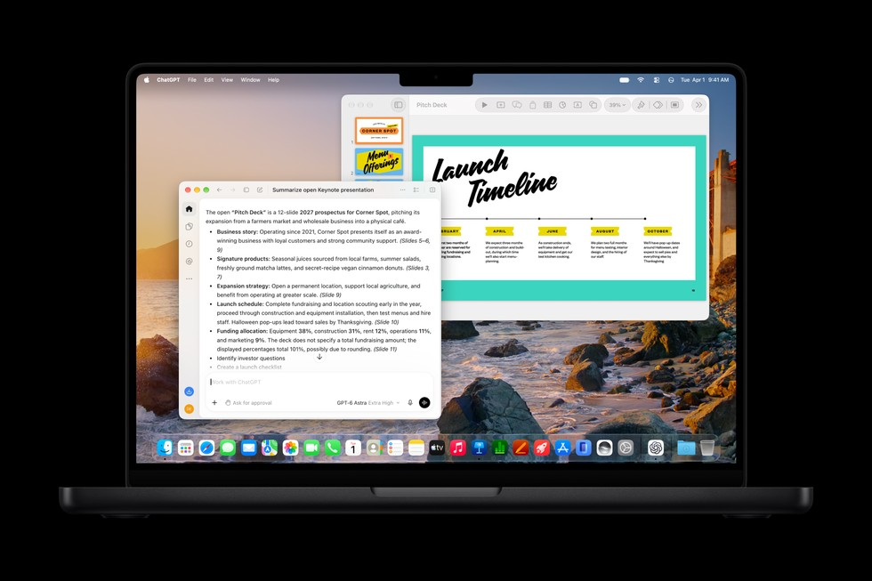
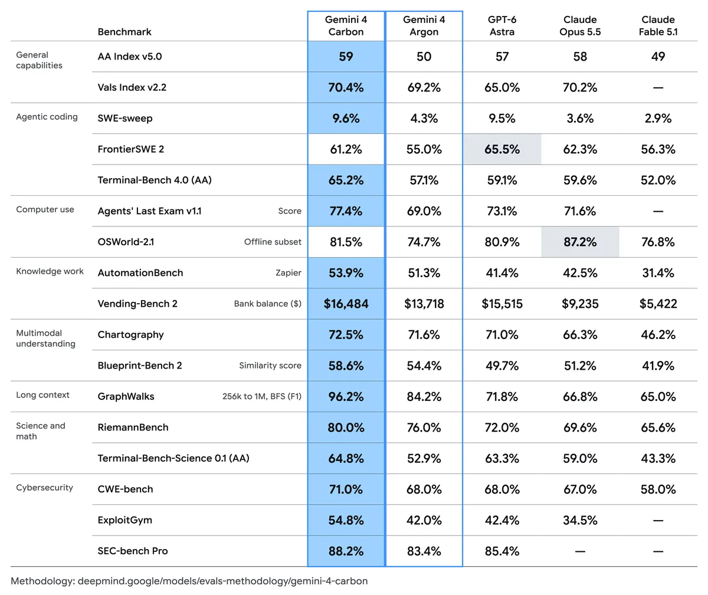

科技產品 T1

官方展示外部助理整理Keynote簡報的工作流程，非本報實測；更新預定十一月。 Apple Newsroom
Apple 公布 Creator Studio 十一月更新，加入文件助理測試與 MCP 支援
發佈時間
Apple／Creator Studio
Apple 預告創作軟體套件的新功能，從影音工具延伸到理解文件脈絡的助理與外部代理編輯介面。
- Final Cut Pro 整合 MotionVFX；Pixelmator Pro 增加 Generate Fill，Logic Pro 加入助理測試與更細的音軌分離。
- Keynote、Pages、Numbers 助理為 beta，需支援 Apple Intelligence 的裝置與 OS27，初期限美式英語；MCP需macOS27。
- 官方稱十一月供既有訂閱者免費更新；美國新訂閱US$12.99/月或129/年，Freeform部分功能預定十二月。
完整報告收合報告
事件背景與影響
文件、試算表與簡報可接入代理工作流程，但硬體、系統、語言與訂閱資格會限制適用範圍。
事件與發佈依據
10/27官方公布具體功能與十一月更新規畫；不是宣稱截點時已全面推出。
收錄紀錄
10/19至11/1十四份日報無此軟體更新事件，查無命中後已核對32列同窗表；不同於已收錄M6硬體。
尚待確認
未公布所有功能的精確上線日；不能把發布規畫寫成已全面可用，也不能假設免費版與買斷版均享相同功能。配圖是官方外部助理整理Keynote示範，非本報實測。
相關實體與概念
Apple、文件助理、MCP、影音創作、代理自動化。
科技產品 T2

Google官方評測表，非本報實測；不同任務及防護設定不可直接泛化。 Google／Google DeepMind
Google 公布 Gemini 4 Carbon，先向部分資安防禦者提供受控存取
發佈時間
Google DeepMind／Gemini 4 Carbon
Google 宣布新前沿模型 Carbon，強調長時間程式任務與資安工作；首批僅提供部分防禦者及可信合作夥伴。
- 官方表示透過 Fairwind 計畫逐步擴大可信夥伴存取，一般開發者、企業與消費者仍屬後續推出對象。
- 程式、漏洞查找及修補成績來自官方公布的評測；部分資安基準是在未套用防護條件下測得。
- 公告列未來推出的介紹價每百萬輸入／輸出token US$2／10，介紹期後4／20；不代表所有人現在即可購買。
完整報告收合報告
事件背景與影響
模型能力與實際存取權限是兩件事，企業評估時須同時確認防護、資格與產品推出狀態。
事件與發佈依據
官方頁面10/28，metadata為2026-10-28T17:00:00Z；採新模型及分階段存取公告。
收錄紀錄
窄查Carbon、Fairwind，十四報無命中，再核對同窗32列產品表仍無此事件。
尚待確認
沒有一般全面開放日期；所測提示注入集合0%成功率不能視為無漏洞保證，效能表亦非本報獨立實測。
相關實體與概念
Gemini、Google DeepMind、Fairwind、資安防禦、長時程代理。
全球焦點 1
OPEC+七國正式決定十二月維持產量目標，十一月底再議市場
發佈時間
沙烏地阿拉伯、俄羅斯等七國決定十二月沿用九月要求產量，維持既定政策。
- 參與者包括沙烏地阿拉伯、俄羅斯、伊拉克、科威特、哈薩克、阿爾及利亞及阿曼。
- 官方明訂十二月維持九月要求產量，並重申遵守合作安排。
- 下次會議為11/29，2027年架構仍是後續議題。
完整報告收合報告
事件背景與影響
中東供應與出口中斷仍影響油市；帳面配額不變不等於實際供應已恢復正常。
事件與發佈依據
11/1線上會議後官方聲明，不以10/31原則同意消息替代正式決議。
收錄紀錄
十四報無同次十二月配額正式決議。
尚待確認
配額是政策目標，不是實際開採或出口量；本次決議不能推導出未來油價必然走向。
相關實體與概念
OPEC+、石油配額、能源安全、供應中斷。
全球焦點 2
續報｜Binance 分階段恢復提領，公司稱已補足95%失竊資產
發佈時間
Binance 在巨額失竊後恢復部分幣種提領，聲稱已用公司資金補足95%受影響資產，但並非已追回95%贓款。
- 首階段涵蓋15種加密資產，部分服務仍受限。
- 公司稱截至15:30Z淨流出約36.4億美元；DefiLlama顯示43.6億，公司指其未正確處理新熱錢包移轉。
- 補足資產來自公司資金及相關基金，餘下流動性較低資產仍需時間取得。
完整報告收合報告
事件背景與影響
復原服務是信任修復的重要測試，補償、資產凍結與實際追贓須分開理解。
事件與發佈依據
11/1實際恢復部分提領；Reuters後續記錄截至15:30Z的資金流動。
收錄紀錄
2026-10-31已收錄入侵途徑及資產凍結；新增實際恢復服務、替代資產補足進度及資金流出。
尚待確認
資金流口徑不同，不把兩數直接相加；FBI歸因北韓與川普較保留說法並存，完整攻擊調查仍未結束。
相關實體與概念
Binance、熱錢包、資產儲備、DefiLlama、FBI。
全球焦點 3
加薩兩起新空襲造成至少8死，醫療單位稱包括5名警員
發佈時間
加薩市及汗尤尼斯11/1遭襲，醫療人員及哈瑪斯控制的內政部稱至少8人死亡。
- 醫療人員稱加薩市一次襲擊造成3人死亡。
- 內政部稱汗尤尼斯西部另有5名警員死亡。
- 以軍稱在汗尤尼斯打擊數名武裝人員，未立即對加薩市襲擊作說明。
完整報告收合報告
事件背景與影響
停火安排下仍有致命攻擊，平民保護與地方治安功能持續面臨風險。
事件與發佈依據
Reuters11/1報導當日新襲擊；原線稿metadata為12:26:37Z。
收錄紀錄
10/20收錄的是WFP減援，與本次兩地新襲擊不同；不重列舊死亡總數充當新事件。
尚待確認
死者身分與攻擊理由存在不同說法，本報無法獨立核實每名死者身分；不將交戰方主張寫成已裁定事實。
相關實體與概念
加薩、汗尤尼斯、以色列軍方、停火、平民保護。
全球焦點 4
伊朗將英國海空軍列為恐怖組織，另將MI6列為敵對團體
發佈時間
伊朗宣布針對英國軍事及情報機構的法律分類措施，稱其為回應英方政策的對等行動。
- 皇家海軍與皇家空軍被伊朗列為恐怖組織。
- MI6依另一法規列為敵對團體，與前兩者的分類不同。
- 伊朗聲明援引英方軍事支援及針對革命衛隊措施作為理由，屬伊朗官方立場。
完整報告收合報告
事件背景與影響
雙方關係進一步惡化，法律標籤可能增加人員與機構接觸風險，但不等於已發生新的軍事衝突。
事件與發佈依據
伊朗外交部11/1聲明當日生效，Tasnim全文轉述，並有AP當日報導確認。
收錄紀錄
十四報未收錄本次針對英國機構的新列名措施，不混同杜哈調停會談。
尚待確認
這是伊朗國內法律措施，不是國際社會一致認定；實際執行方式與後果尚不明確，不能把媒體概括標題代替正文分類。
相關實體與概念
伊朗、英國、Royal Navy、RAF、MI6、外交報復。
全球焦點 5
韓國十月出口年增93.7%，半導體需求與工作日差異共同推升
發佈時間
韓國十月出口達1152.8億美元，較去年同期增加93.7%；強勁晶片需求及較多工作日都影響比較。
- 半導體出口年增約259%，達約564億美元。
- 進口年增36%至727.8億美元，貿易順差425億美元。
- 中秋假期落點造成工作日差異，年增幅須搭配基期判讀。
完整報告收合報告
事件背景與影響
出口呈現AI設備投資需求，但單月名目金額不能直接視為實質經濟成長或所有企業均受益。
事件與發佈依據
11/1公布十月貿易數據；Reuters00:38Z、Yonhap／KoreaHerald00:57Z均在24小時窗內。
收錄紀錄
十四份日報未收錄本次十月正式月報。
尚待確認
部分報導將十月稱為紀錄，但另有次高口徑，本報不宣稱歷史最高；全年兆美元出口仍是官方展望，不是已達成結果。
相關實體與概念
韓國、半導體、AI投資、貿易統計、工作日調整。
全球焦點 6
孟加拉成立成衣業最低工資委員會，罷工與工廠停擺仍未平息
發佈時間
孟加拉政府宣布設立六人委員會檢討成衣工資，但工人示威與交通中斷仍持續。
- 委員會包括勞資代表與中立成員，負責討論新工資。
- 工人要求月薪約3萬塔卡，現行最低工資為1.25萬塔卡；要求尚未等於通過。
- Reuters引述業者組織稱529家工廠停工，與較早僅部分地區數十家的統計範圍不同。
完整報告收合報告
事件背景與影響
勞工生活成本壓力與出口工廠營運相互牽動，工資協商結果也會影響國際成衣供應鏈。
事件與發佈依據
11/1部會正式通知及記者會確認成立，不只引用清晨預告。
收錄紀錄
十四報未收錄本次六人委員會正式成立事件。
尚待確認
成立委員會不是完成調薪；受影響人數與停工家數會變動，不將暫停工作寫成永久失業。
相關實體與概念
孟加拉、成衣業、最低工資、勞資協商、供應鏈。
全球焦點 7
法蘭克福警方公布騷亂初步統計，拘留54人並稱100名警員受傷
發佈時間
警方與地方政府公布法蘭克福暴力及搶掠初步數據，並區分和平示威、尾聲暴力與後續搶掠者。
- 警方稱54人遭拘留、100名警員受傷，其中1人重傷。
- 初步紀錄包括5間商店遭搶掠，調查仍持續。
- 警方稱部分後續搶掠者未見明確政治動機；示威主辦方公開反對暴力。
完整報告收合報告
事件背景與影響
公共安全與抗議權利需同時維護，不能以少數人的暴力概括整個青年運動。
事件與發佈依據
週六晚騷亂延續至週日，11/1警方記者會公開新統計，德國公共媒體當日報導。
收錄紀錄
十四報未收錄此次警方統計，不以一般歐洲示威背景代替事件比較。
尚待確認
以上為警方初步統計與判斷，拘留不等於定罪；不同群體的參與及責任仍須個別調查。
相關實體與概念
法蘭克福、青年抗議、警察、公共秩序。
全球焦點 8
查德政府披露爭水衝突25死22傷，39名被捕者移送首都
發佈時間
查德中部不同社群因取水爭議發生槍戰，政府週日聲明指25人死亡、22人受傷，並移送39名被捕者。
- 地點在Hadjer-Lamis與Bahr El-Ghazal兩省邊界一帶。
- 地方官向AFP稱衝突始於週五池塘取水爭議，並非週日才開始交火。
- 政府稱已派代表團，安全部隊介入並移送被捕者至恩加美納。
完整報告收合報告
事件背景與影響
水資源取得不均與地方武裝暴力相互交織，危及平民安全及社群互信。
事件與發佈依據
AFP11/1 13:13:31Z報導政府當日傷亡及移送狀態，衝突週五開始僅作背景。
收錄紀錄
十四報未收錄本次部會披露的具體傷亡與拘捕狀態。
尚待確認
起因及責任仍依當局與地方人士說法，不能單一歸因氣候變遷；被捕者尚非已定罪者。
相關實體與概念
查德、水資源、社群衝突、平民保護。
全球焦點 9
續報｜塞爾維亞民眾悼念Novi Sad車站災難兩週年，持續要求問責
發佈時間
數千人聚集Novi Sad車站，以16分鐘默哀紀念頂棚倒塌的16名死者，學生與民眾獻花。
- 儀式在11:52開始，對應2024年倒塌時刻。
- 每名死者以1分鐘默哀紀念，學生於儀式後獻上白花。
- 車站災難促成大規模學生運動；今日紀念活動不是新發生的倒塌事件。
完整報告收合報告
事件背景與影響
政治更替沒有消除公共工程責任追究需求，受害家屬與公民團體仍關注司法程序。
事件與發佈依據
N1首發14:57:25Z，報導當日11:52CET開始的紀念集會。
收錄紀錄
2026-10-26已收錄學生支持名單選舉勝利；新增11/1實際紀念集會及問責訴求，不再報一次選舉結果。
尚待確認
集會講者對犯罪的指控不能代替法院判決；選舉勝利也不等於所有司法責任已釐清。
相關實體與概念
Novi Sad、塞爾維亞、學生運動、公共工程問責。
全球焦點 10
紐約馬拉松由Chepkirui再奪女子冠軍，Almgren初跑全馬即封王
發佈時間
肯亞Sheila Chepkirui以2:24:36贏得女子組，瑞典Andreas Almgren在全馬首秀以2:06:01拿下男子組。
- Chepkirui在三年內第二度奪得紐約冠軍。
- 美國Jess McClain以2:24:42取得女子第二，Hellen Obiri第三。
- Almgren以13秒領先義大利Yemaneberhan Crippa，成績與World Athletics官方男子結果一致。
完整報告收合報告
事件背景與影響
年度重要城市馬拉松決出冠軍，女子組最後階段的名次競爭與男子首秀奪冠受到關注。
事件與發佈依據
11/1紐約當日上午賽事結果，Reuters／KFGO16:22Z報導，台北11/2 00:22已在截點前。
收錄紀錄
十四報未收錄本屆正式冠軍結果，不以賽前名單代替。
尚待確認
各網站即時清單可能有秒數或排列錯字，採官方及原線稿交叉核對；不把本屆成績冒稱世界紀錄。
相關實體與概念
紐約馬拉松、Sheila Chepkirui、Andreas Almgren、World Athletics。
研究備註
時間、來源與後續追蹤
研究截點 2026-11-02 08:04:32（Asia/Taipei）
研究時間與範圍
研究截點：2026-11-02 08:04:32（Asia/Taipei）。全球新聞：2026-11-01 08:04:32 至 2026-11-02 08:04:32（Asia/Taipei）。科技產品：2026-10-19 08:04:32 至 2026-11-02 08:04:32（Asia/Taipei）。